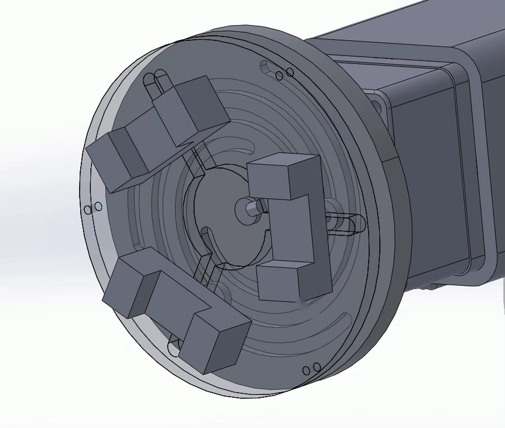

Mechanical engineer · M.Sc. Intelligent Manufacturing
Dhruv Bhatt
I work across technology, automation and data, driven by a desire to understand how the different components of an engineering system work together. I’m drawn to problems that require me to learn new methods, connect ideas across disciplines and apply what I learn to practical engineering challenges.

Areas of experience
Explore the connections
Select a field to see related work.
About Me
How I approach engineering
I like to understand the real constraints of a problem before choosing a tool or method. I test ideas, examine what the results actually show and refine my approach when something doesn’t hold up. I value different perspectives in a team; they often raise questions I might not have thought to ask. I’m looking for hands-on engineering work where I can contribute this way and develop deeper expertise in automation and systems integration.
Contact
Let’s talk about engineering work.
For internships, working-student opportunities or a conversation about my projects, reach me by email.
bhattdhruv.de@gmail.com